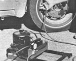
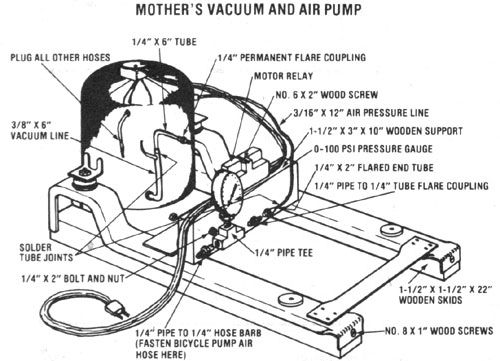

It doesn't take much cash or time to recycle an old refrigerator into . . .
Most cost-conscious folks would frown on the purchase of a product that might see use only once or twice in a year's time. But when that same implement can be salvaged-at almost no expense-chances are that the frowns will turn to smiles . . . no matter how often the device is used!
Such is the case with MOTHER's combination air and vacuum pump, which is nothing more than a slightly modified refrigerator compressor, but is still capable of inflating tires, filling air tanks, recharging cooling systems, or evacuating heat pipes . . . all with just a little tinkering. MOM's research crew discovered several years ago that many folks were literally begging to be rid of old iceboxes-most of which had bad door seals or temperamental thermostats, but perfectly good compressors-so locating the "raw material" for this project should be no problem, even if it requires a trip to your local dump.
The conversion from cooler to pump is an easy one. The job requires a tubing cutter or hacksaw, a drill with an assortment of bits, a soldering iron and some 50/50 general-purpose plumbing solder, a handsaw, a 9/16" wrench, and a pair of pliers. In the way of hardware, you'll need six No. 8 X 1" flathead wood screws, a No. 6 X 2" threaded wood fastener, a 1/4" pipe tee, a 1/4" pipe to 1/4" tube flare coupling, a 1/4" pipe to 1/4" hose barb, a 1/4" male 45° permanent flare coupling (available from your local refrigeration and heating supply jobber), a 1/4" X 2" bolt with nut and washer, and a 1/4" stem 0-100 PSI pressure gauge. A scrap of 2 X 4 about 32" long will also be required, and a length of bicycle tire pump hose.
The first step, of course, is to investigate a fridge or two until you discover a self-contained hermetic compressor similar to that shown in the photograph. (Be warned that not all canister-style pressurizers are the same. Some have a permanent oil reservoir, while others use the circulating refrigerant as a lubri cant and hence will not run indefinitely when salvaged. Ask your local refrigeration mechanic . . . he or she may be able to tell you which type your choice is.) Remove the mechanism by unbolting its mounting platform from the refrigerator frame and cutting the coolant "feed" lines as far from the drive unit as possible. (Important: Always wear goggles and gloves-and work in a well-ventilated area-whenever you are discharging a refrigerant.)
Next, locate the largest -diameter pipe (this suction "hose" is usually found protruding from the bottom of the canister) and the uppermost 3/16"-outside-diameter tube (which is the discharge hose) on the housing. Trim the inlet line to about 6" in length, and the outlet line to a foot or so . . .taking care not to collapse either conduit wall as you cut. With this done, remove an 8" section of 1/4" O.D. flared-end copper tubing from one of the lines left in the main body of the cooler (if you can't find one, just 45°flare the tip of a scrounged straight piece of tube), and cut a 2" stub off the "funneled" end.
Now slip your flare nut over this short segment, and-taking the remaining 6" piece of 1/4" line-prepare to fasten the small section to the pump's outlet pipe, and the longer portion to its "draw" hose. (This suction pipe will "surround" its narrower mate . . . while the pressure tube should fit within its matching half.) Clean all the to-be-joined surfaces with some steel wool and a sliver of fine sandpaper, then solder the respective pieces together. When the work has cooled, fasten the 1/4" flare coupling to the exposed end of the vacuum tube. (You can also take this opportunity to plug-with solder-any additional hoses coming from the canister, if they're not sealed up already.)
Assemble the remainder of your fittings by threading the flare coupling and the hose barb to the tee-on the "arms" opposite each other-and the pressure gauge to the junction's third outlet. (You might want to use a thread sealant to prevent leakage here.) Finally, solder your 1/4" X 2" bolt to the back of the tee fitting (the side to the rear of the gauge).
Complete the project by measuring the length of the compressor's mounting platform, and cutting a section of your 2 X 4 to equal that dimension (the remaining scrap of wood can be trimmed to match the structure's width). Rip the longer plank in half (on its broad side), then mount the pair of wooden skids to the frame's base-and the crosspiece to its upper surface-by placing the 1" screws through existing holes and into the wood. (You can also, at this time, drill a 1/4" hole in the transverse support to hold the gauge and tee in place . . . but remember to tighten the flare nut to its coupling before mounting the brass components.) When that's done, all that remains is to secure the motor's electric relay box (a self-actuating safety switch) to the 2 X 4-as shown in the drawing-with a 2" wood screw, and attach the air hose to its barbed nipple with a clamp.
You'll discover-as we did-that your homebuilt compressor/ vacuum pump is a hardworking and versatile tool. Even though it doesn't have the capacity of some larger store-bought models (a handicap that merely causes it to take longer to do the biggest jobs), it is capable of delivering over 100 pounds of air pressure . . . far more than you'll ever need to fill a tire, charge a well tank, or even spray paint (which would, of course, require the addition of a pressure storage tank to the pump). And-in case you aim to recharge auto air conditioning systems or refrigerators-the inlet fitting is compatible with standard vacuum gauges . . . and the compressor can draw about 24" of mercury with little problem.
Considering the fact that the commercial equipment necessary to do the jobs MOM's pump can handle could cost $400 or more, we're willing to bet that cost-conscious handypersons will find the device well worth an hour's time and a few dollars spent at the hardware store!
|
 |
 |
|